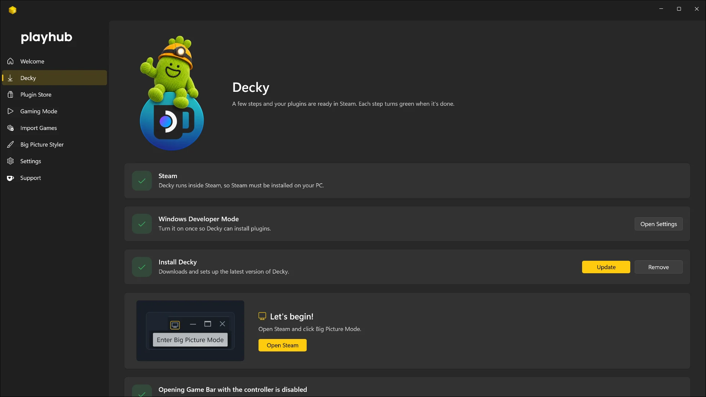
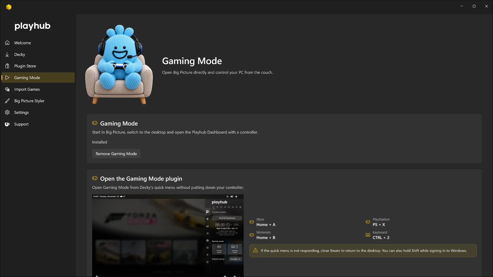
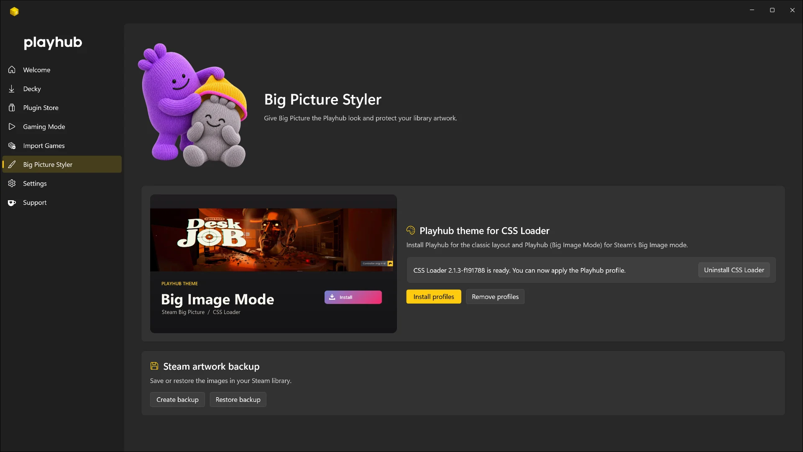
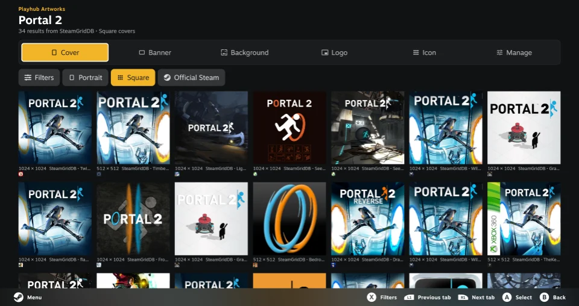
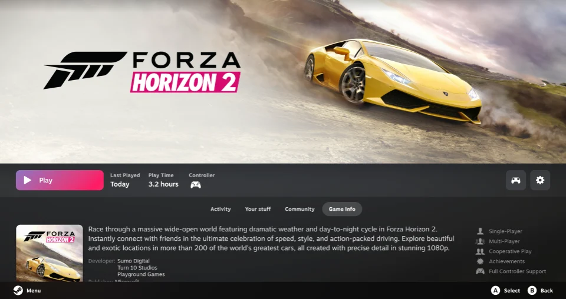
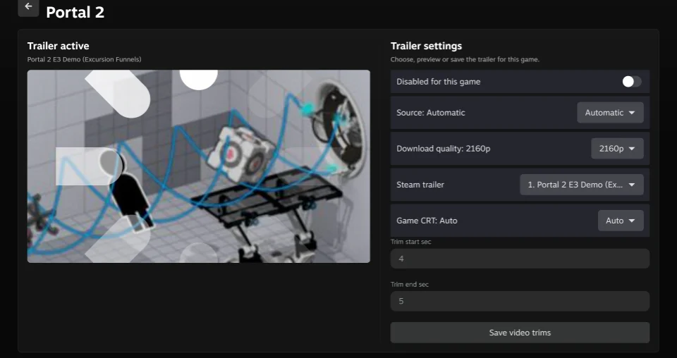
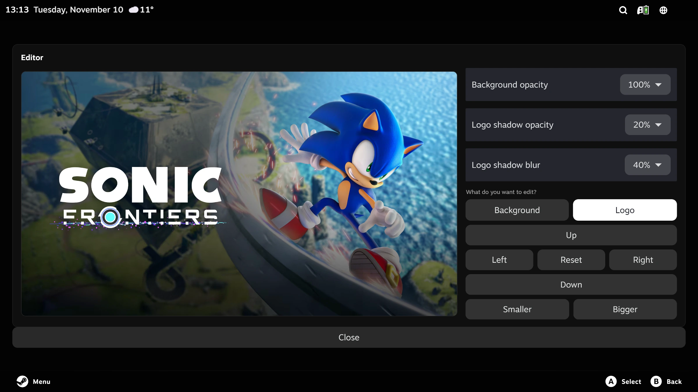

Gaming Mode
From desktop
to Big Picture.
Start Windows in a controller-friendly Steam interface and return to the desktop with Switch Mode.

Bring your games into Steam, make Big Picture yours, and pick up a controller.
Download PlayhubCompatible with Windows

Start in Steam Big Picture, bring in your games from other stores, and tailor the interface to your setup.
Gaming Mode
Start Windows in a controller-friendly Steam interface and return to the desktop with Switch Mode.
Import Games
Add games from Xbox, Microsoft Store, Epic and GOG to Steam, then choose the artwork for your library.

Plugin Store
Set up Decky and discover, install and manage plugins from Playhub, the Decky Store and independent projects.

Big Picture Styler
Choose a Playhub theme and apply its CSS Loader profile to the Steam Big Picture home screen.






Start with Playhub’s Quick Access controls. Then make the library, the moment a game starts, and the time between sessions your own.


Set volume and microphone levels, pick your audio device, and change refresh rate, resolution or HDR from Steam’s Quick Access Menu. Playhub shows the controls your hardware supports.
Tune controller settings and access graphics options such as Radeon controls or Lossless Scaling when available. Reorder Quick Access tabs, pin plugin shortcuts, or open Decky and the Plugin Store from the same panel.


Pick up an open game or app from its window preview. Save the apps you launch often as shortcuts and open them with the controller from the Apps tab.
Check CPU, GPU and memory use from System, or use Switch Mode when you want to return to the Windows desktop.


Browse gaming headlines in What’s New, then open On this day for a story about a release, studio or creator from that date in gaming history.
When you step away, Playhub Circles turns Big Picture into an animated screensaver with the time, date and weather when available.

Open a game’s options in Big Picture to search for covers, banners, backgrounds, logos and icons. Look through SteamGridDB, PlayStation, Nintendo, Xbox, IGDB, AlphaCoders, iiDB and IGN from one editor. You can switch sources for the same game and pick each asset separately.
Use Perfect Hero for a game page or Perfect Banner for a wide library tile. Both combine a background and a logo into one high-resolution image. Adjust the logo’s position, scale, opacity and shadow with your controller, then apply the composition. The batch tools can also fill missing artwork across your library.

Give a non-Steam shortcut its own description, developer, publisher and release details in the usual Big Picture page. Search for missing details automatically or fix a match by hand. Shortcuts linked to a Steam Store page can also show that game’s news in Activity.
Show progress from RetroAchievements, Xbox via OpenXBL on supported shortcuts, or trophies from local RPCS3 data. Choose the source for each game and refresh its progress after playing.

Open a game page and its artwork gives way to a muted trailer in the same space. TrailerHero can play the Steam trailer first and look for a match on YouTube when needed.
Choose a different Steam video, save a specific YouTube trailer or use your own clip. Trim the beginning and end per game, and switch from ThemeDeck music to trailer audio with the controller.

Give a game its own music when you open its library page. Preview a YouTube search result or pick a local track, then set the starting point, loop and volume for that game.
Choose separate ambient music for the Steam interface and Store. Game-page themes stop when you launch the game.

When you launch a game from Big Picture, a full-screen transition covers the desktop and launcher windows while the game opens.
Choose artwork and a logo, adjust how they appear, and add a short soundbite with its own volume. Preview your changes for each game before you play.


Pause, skip or change volume from Quick Access, then open the full-screen player to browse albums, playlists and artists with a controller.
Play Spotify, YouTube Music and music from your own folders, or control compatible Windows media players. The full-screen player adds audio-reactive visualizers.


Choose how achievements, messages and invites appear in Big Picture. Themes have their own shapes, animation and sounds, which you can preview before applying.
Set which notifications appear and adjust their sound volume. The Gaming Mode volume indicator can follow the same theme, while Steam retains your notification history.

Check where your audio is going before you play. Choose stereo, 5.1 or 7.1 on the speaker map, then select one channel or run the whole test sequence.
Pick a test signal and adjust the volume from the controller. Multichannel playback follows the channels exposed by your Windows audio device.

Read the latest headlines in Quick Access or open the full-screen Newsstand to browse a magazine built from the publishers you follow.
Choose sources by country, search for a publisher, or add a website, an RSS feed or an Atom feed. Organize the Newsstand into tabs and open stories in Reader Mode when the source provides the article.

Check current conditions, the next 24 hours and the five-day forecast from Quick Access. Search for a city or enter coordinates, then choose metric or imperial units.
Add the temperature or a weather icon next to Steam’s clock for a quick glance. Forecasts come from Open-Meteo.

Connect or disconnect Proton VPN, check your tunnel status and pick a country from Steam’s Quick Access Menu. Recent connections make it easy to return to a country you used before.
The plugin works with the installed Proton VPN client for Windows after you sign in to it. When you change countries, the tunnel reconnects to apply your choice.